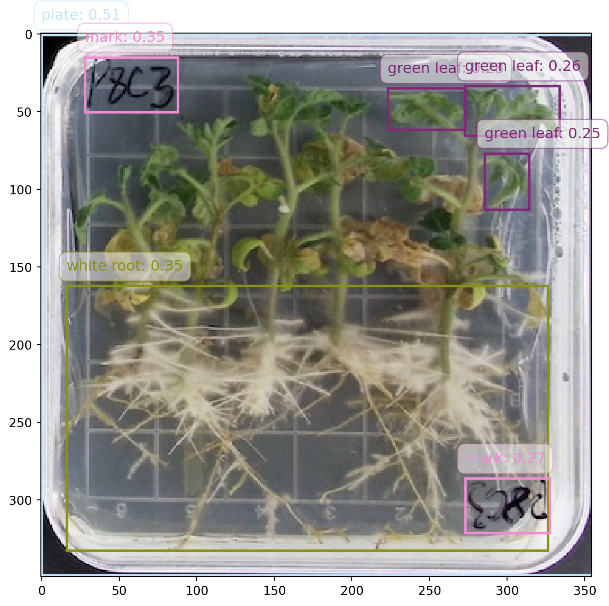
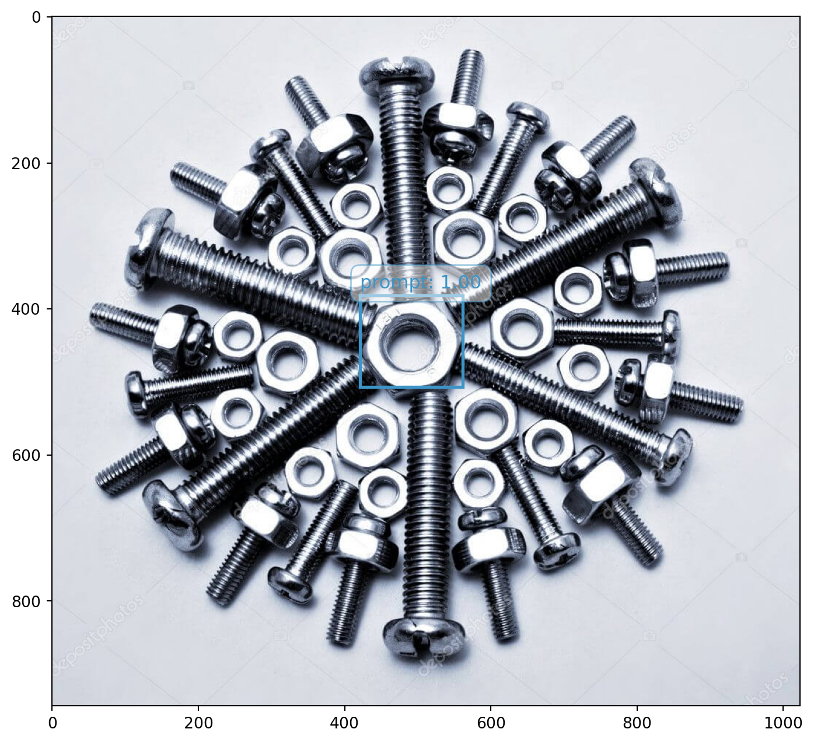
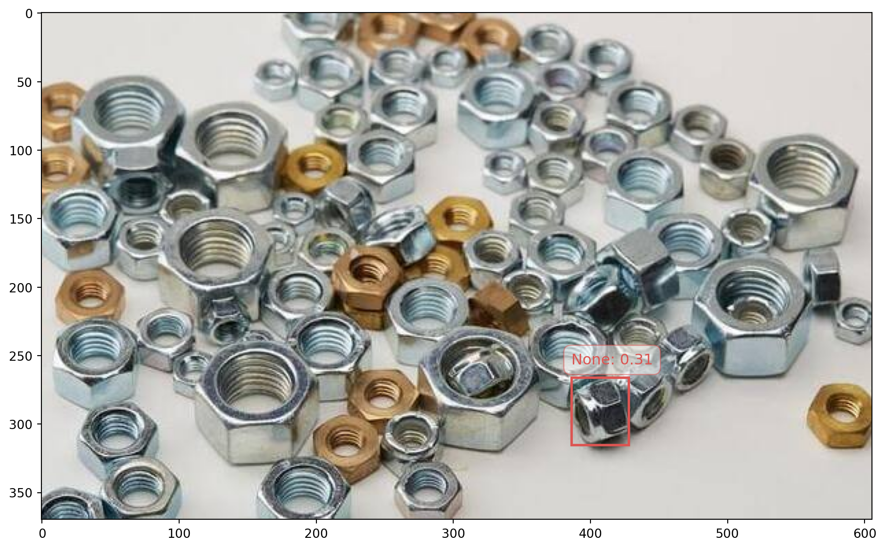
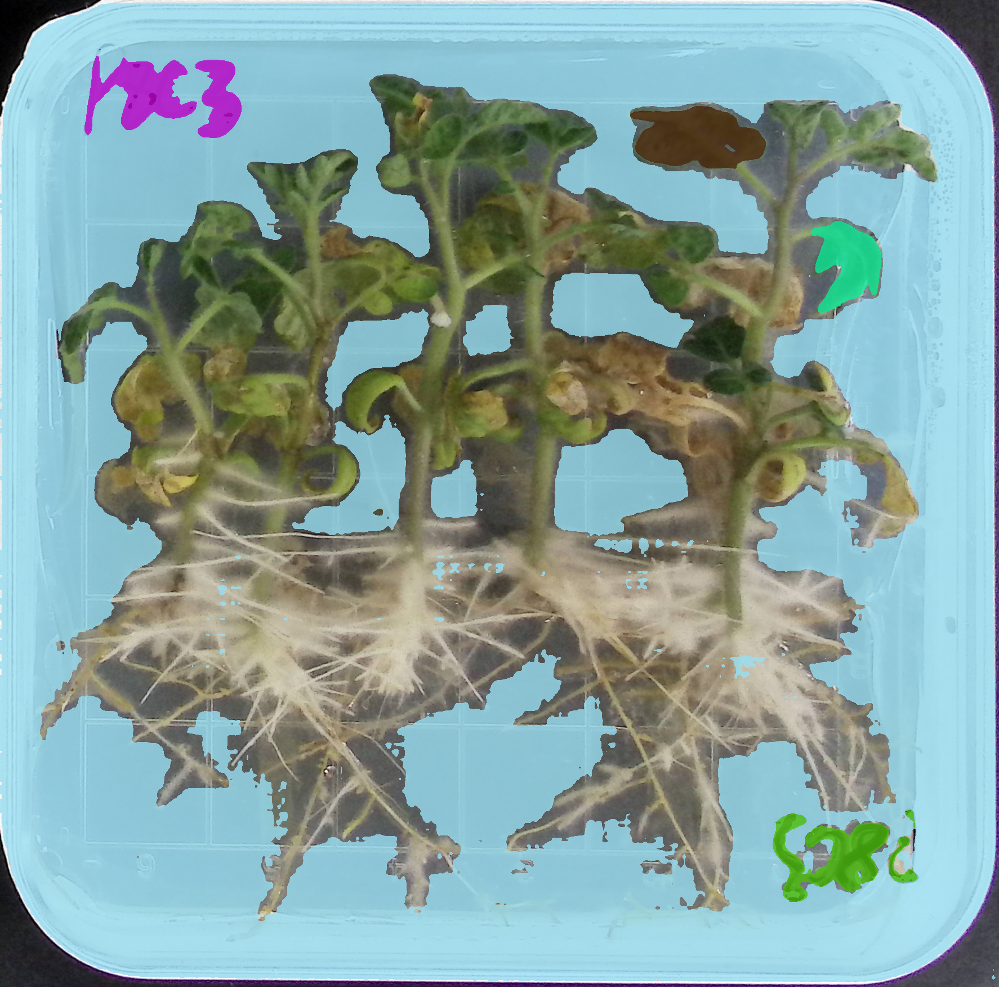
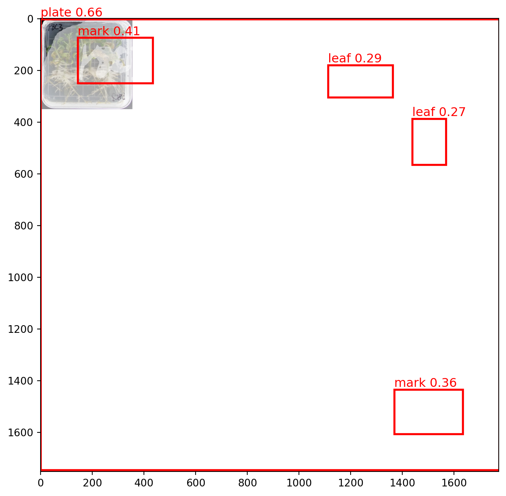

import json
import time
import os
import requests
# 1. 封装 Header，带上 Token
headers = {
"Content-Type": "application/json",
"Token" : os.getenv("DINO_API_KEY")
}9 DDS Could
DDS Cloud 是 Grounding DINO API 的服务提供商。该云平台提供最前沿的计算机视觉算法，专注于目标检测和分割。平台支持文本提示和视觉提示，能够在复杂且密集的场景中高效识别和分割任意物体。用户通过网络请求即可快速接入这些高性能算法，享受领先技术带来的便利。无论是安防监控、智能零售、自动驾驶、医疗影像分析还是工业检测，DDS Cloud API 平台都能为广泛的行业用户提供卓越的算法支持和技术体验，助力企业提升业务能力，抢占市场先机。
9.1 Grounding DINO
Grounding DINO 能够根据用户提供的类别名（文本），智能地识别图像中与用户提供的类别名相关的物体的位置和置信度，让各种场景的检测变得更加简单，包括了常见物体目标检测，长尾物体目标检测，密集场景检测，长短文本物体定位等。
Note
Grounding DINO 是一种先进的视觉语言模型，专门用于开放领域目标检测任务。这意味着它不仅可以检测和识别特定类别的目标，还能够根据自然语言提示，检测图像中任意对象。这种模型结合了目标检测（如 DINO）和自然语言处理（grounding）的能力，因此具备了强大的灵活性和广泛的适应性。
Grounding DINO 的核心特性：
开放领域目标检测：模型能够识别并检测图像中任意类别的对象，而无需事先定义特定的标签集。用户可以通过输入任意的文本提示，模型会依据提示在图像中找到相应的对象。例如，输入 “find a person with a red shirt” 这样的指令，模型可以在图像中定位并标出红色衬衫的人。
结合视觉和文本特征：Grounding DINO 能够将文本的语义信息与视觉特征相结合，在理解自然语言的同时，还能够高效处理图像中的目标检测任务。它采用了 Transformer 架构（如 DINO）进行图像的目标检测，同时与语言模型紧密结合，实现对图像和文本的联合理解。
应用场景广泛：Grounding DINO 可以应用在许多需要图像与语言交互的场景中，比如图像标注、自动驾驶、机器人导航、增强现实（AR）等领域。它的开放领域检测特性使得它非常适合在没有明确类别标签的情况下执行复杂的目标检测任务。
相关工作：
- DINO（DEtection Transformer with Improved Optimization）：是一种基于 Transformer 的目标检测模型。Grounding DINO 继承了 DINO 模型在目标检测中的强大性能，同时扩展了其与自然语言提示交互的能力。
- 视觉语言模型：Grounding DINO 属于视觉语言模型家族的一员，这些模型致力于处理视觉和文本的交互问题。例如，CLIP 等模型能够从文本描述中找到与之对应的图像，而 Grounding DINO 更侧重在图像中找到指定的对象。
Grounding DINO 的工作流程：
- 输入：一张图像和一个文本提示。
- 处理：模型通过视觉编码器对图像进行处理，并通过语言编码器对文本进行编码，然后结合这两部分信息。
- 输出：模型根据文本提示返回图像中检测到的目标位置（通常是边界框）。
Grounding DINO 在开放场景目标检测中展现出了强大的表现，并在很多研究和应用中取得了显著成果。
9.1.1 参数
| 参数 | 说明 | 类型 | 默认值 | 是否必填 |
|---|---|---|---|---|
image |
目标图片， base64 或者 http(s) 链接图片 url | String | 无 | 是 |
prompts |
提示类别，多个提示类别，数组设置多项 | Array | 无 | 是 |
prompts[].type |
prompt 类别，目前支持文本，固定值为 “text” | String | 无 | 是 |
prompts[].text |
prompt 提示文本 | String | 无 | 是 |
model |
dino 模型，值可为：GroundingDino-1, GroundingDino-1.5-Edge, GroundingDino-1.5-Pro | Enum | 无 | 是 |
targets |
检测目标类型， 最多支持同时 “bbox”和 “mask”，bbox 为检测边界框 mask 为分割掩码，如[“bbox”] | Array | 无 | 否 |
bbox_threshold |
边框置信度阈值, 范围是 0-1 | Number | 0.25 | 否 |
iou_threshold |
交并比阈值，IoU 阈值，范围是 0-1 | Number | 0.8 | 否 |
9.1.2 提交任务
设置 Body。
# 使用网络图片的示例
body = {
"image": "https://playground/grounding_DINO-1.5/02.jpg",
"prompts": [
{"type": "text", "text": "window covering"},
{"type": "text", "text": "dinner table"}
],
"model": 'GroundingDino-1.5-Pro',
"targets": ["bbox"]
}如果使用本地图片，需要进行 base64 编码转换。
import base64
def image_base64(image_path):
# 读取图片并将其转换为 base64
with open(image_path, "rb") as image_file:
# 读取图片的二进制数据
image_data = image_file.read()
# 将图片数据转换为 base64 编码
encoded_image = base64.b64encode(image_data)
# 将 base64 数据转换为字符串形式
encoded_image_str = encoded_image.decode('utf-8')
return encoded_image_str
# 打印或使用 base64 编码字符串
image_path = "example/images/leaf-plate.jpg"
print(image_base64(image_path)[:70])/9j/4Q/+RXhpZgAATU0AKgAAAAgABgESAAMAAAABAAEAAAEaAAUAAAABAAAAVgEbAAUAAA将图片的 base64 编码与 mime type 组成一个字符串，可以传递给 body 参数。
import mimetypes
def image2base64_with_mime(image_path):
# 获取文件的 MIME 类型
mime_type, _ = mimetypes.guess_type(image_path)
# 读取图片并将其转换为 base64
encoded_image_str = image_base64(image_path)
# 如果未能识别出 MIME 类型，抛出异常
if mime_type is None:
raise ValueError("无法识别文件的 MIME 类型")
# 构建带有前缀的 base64 数据
data_uri = f"data:{mime_type};base64,{encoded_image_str}"
return data_uri
image = image2base64_with_mime(image_path)
print(image[:70])data:image/jpeg;base64,/9j/4Q/+RXhpZgAATU0AKgAAAAgABgESAAMAAAABAAEAAAE提示文本也是必需参数。
prompts = [
{"type": "text", "text": "green leaf"},
{"type": "text", "text": "white root"},
{"type": "text", "text": "plate"},
{"type": "text", "text": "mark"},
{"type": "text", "text": "seedling"}
]
# 完整的 body 信息
body = {
"image": image,
"prompts": prompts,
"model": 'GroundingDino-1.5-Pro',
"targets": ["bbox"]
}提交并获取结果。
max_retries = 60 # max retry times
retry_count = 0
# send request
resp = requests.post(
'https://api.deepdataspace.com/tasks/detection',
json=body,
headers=headers
)
if resp.status_code == 200:
json_resp = resp.json()
print(json_resp)
# {'code': 0, 'data': {'task_uuid': '092ccde4-a51a-45'}, 'msg': 'ok'}
# get task_uuid
task_uuid = json_resp["data"]["task_uuid"]
print(f'task_uuid:{task_uuid}')
# poll get task result
while retry_count < max_retries:
url = f'https://api.deepdataspace.com/task_statuses/{task_uuid}'
resp = requests.get(url, headers=headers)
if resp.status_code != 200:
break
json_resp = resp.json()
if json_resp["data"]["status"] not in ["waiting", "running"]:
break
time.sleep(1)
retry_count += 1
if json_resp["data"]["status"] == "failed":
print(f'failed resp: {json_resp}')
elif json_resp["data"]["status"] == "success":
print(f'success resp: {json_resp}')
else:
print(f'get task resp: {resp.status_code} - {resp.text}')
else:
print(f'Error: {resp.status_code} - {resp.text}'){'code': 0,
'data': {'task_uuid': 'd045178b-1464-4f9e-a174-fe3831abc73e'},
'msg': 'ok'}
'task_uuid:d045178b-1464-4f9e-a174-fe3831abc73e'
{'code': 0,
'data': {'error': None,
'result': {'mask_url': None,
'objects': [{'bbox': [223.06446838378906,
35.035160064697266,
272.95477294921875,
61.655147552490234],
'category': 'green leaf',
'score': 0.27744603157043457},
{'bbox': [272.7744140625,
33.38804244995117,
333.6698913574219,
65.36283874511719],
'category': 'green leaf',
'score': 0.25876155495643616},
{'bbox': [285.2734375,
76.83197784423828,
313.98486328125,
113.02987670898438],
'category': 'green leaf',
'score': 0.2526818513870239},
{'bbox': [16.204608917236328,
162.24551391601562,
326.1462097167969,
332.5343017578125],
'category': 'white root',
'score': 0.3498225212097168},
{'bbox': [-0.044403523206710815,
0.6356537342071533,
354.9541320800781,
348.5513000488281],
'category': 'plate',
'score': 0.5082138776779175},
{'bbox': [27.883333206176758,
14.915810585021973,
87.8292465209961,
50.41350173950195],
'category': 'mark',
'score': 0.34625986218452454},
{'bbox': [273.0254211425781,
286.09423828125,
327.3944091796875,
321.43170166015625],
'category': 'mark',
'score': 0.26843780279159546}]},
'session_id': 'a2148db20aaa4a09ac4faab99f0e916e',
'status': 'success',
'uuid': 'd045178b-1464-4f9e-a174-fe3831abc73e'},
'msg': 'ok'}9.1.3 处理结果
将检测的结果标在图片上面。
# 计算识别到的类型数目
def category_num(data):
# 初始化一个字典用于存储每个 category 的计数
category_count = {}
# 获取 JSON 数据中的 objects 列表
objects = data['data']['result']['objects']
# 遍历每个 object
for obj in objects:
category = obj.get('category')
# 如果 category 已存在于字典中，则计数加1，否则初始化为1
if category in category_count:
category_count[category] += 1
else:
category_count[category] = 1
return category_count
import matplotlib.pyplot as plt
from PIL import Image
import numpy as np
import matplotlib.patches as patches
def plot_with_result(image_path, json_resp):
# generate random color
category_count = category_num(json_resp)
colors = {category: np.random.rand(3,) for category in category_count}
# Create a figure and axis for plotting
fig, ax = plt.subplots(1, 1, figsize=(12, 8))
# Display the original image
image = Image.open(image_path)
ax.imshow(image)
# 获取 JSON 数据中的 objects 列表
detection_results = json_resp['data']['result']['objects']
# Overlay bounding boxes and labels with random colors
for result in detection_results:
score = result.get('score') or 0
label = result.get('category')
bbox = result['bbox']
# Generate a random color
color = colors[label]
# 创建一个矩形框，参数为 (左上角 x, 左上角 y, 宽度, 高度)
rect = patches.Rectangle(
(bbox[0], bbox[1]), # 左上角坐标
bbox[2] - bbox[0], # 宽度
bbox[3] - bbox[1], # 高度
linewidth=2, # 边框宽度
edgecolor=color, # 边框颜色
facecolor='none' # 填充颜色
)
ax.add_patch(rect)
# Draw label and score with the same color as the rectangle
label_text = f"{label}: {score:.2f}"
ax.text(
bbox[0],
bbox[1] - 10,
label_text,
color=color,
fontsize=12,
bbox=dict(facecolor='white', alpha=0.5,
edgecolor=color, boxstyle='round,pad=0.5')
)
# Hide axis
# plt.axis('off')
# Show the plot with bounding boxes and labels
plt.show()
plot_with_result(image_path, json_resp)
9.2 Grounded SAM
Grounded SAM 算法集成了 Grounding DINO 1.0 和 SAM 算法 2 种功能，利用文本提示有效地检测边界框和分割掩码。
9.2.1 参数
| 参数 | 说明 | 类型 | 默认值 | 是否必填 |
|---|---|---|---|---|
image |
目标图片， base64 或者 http(s) 链接图片 url | String | 无 | 是 |
prompts |
提示类别，多个提示类别，数组设置多项 | Array | 无 | 是 |
prompts[].type |
prompt 类别，固定值为 “text” | String | 无 | 是 |
prompts[].text |
提示文本 | String | 无 | 是 |
model_type |
模型，值可为：“swinb” ,‘swint’ | Enum | 无 | 是 |
box_threshold |
边框置信度阈值, 范围是 0-1 | Number | 0.3 | 否 |
nms_threshold |
交并比阈值，IoU 阈值，范围是 0-1 | Number | 0.8 | 否 |
9.2.2 提交任务
# 使用同样的 image 和 prompt
body = {
"image": image,
"prompts": prompts,
"model_type": "swinb"
}
# 获取结果
# send request
resp1 = requests.post(
url='https://api.deepdataspace.com/tasks/grounded_sam',
json=body,
headers=headers
)运行图像分割任务。
# get task_uuid
retry_count = 0
if resp.status_code == 200:
json_resp = resp.json()
# task_uuid = json_resp["data"]["task_uuid"]
task_uuid = "50b6ac9f-aa4f-44b8-897f-6f2f41accdf6"
print(f'task_uuid:{task_uuid}')
# poll get task result
while retry_count < max_retries:
resp = requests.get(f'https://api.deepdataspace.com/task_statuses/{task_uuid}', headers=headers)
if resp.status_code != 200:
break
json_resp = resp.json()
if json_resp["data"]["status"] not in ["waiting", "running"]:
break
time.sleep(1)
retry_count += 1
if json_resp["data"]["status"] == "failed":
print(f'failed resp: {json_resp}')
elif json_resp["data"]["status"] == "success":
print(f'success resp: {json_resp}')
else:
print(f'get task resp: {resp.status_code} - {resp.text}')
else:
print(f'Error: {resp.status_code} - {resp.text}'){}9.2.3 处理结果
# plot_with_result(image_path, json_resp)9.3 Interactive Visual Prompting
交互式视觉提示（IVP）是一种基于 T-Rex 模型的交互式目标检测和计数系统。它通过视觉提示实现目标检测和计数，无需任何训练，真正实现了适用于多种场景的单一视觉模型。它在密集或重叠场景中计数物体方面尤其出色。
9.3.1 提交任务
body = {
"prompt_image": "https://playground/ivp/v2/left_17.jpeg",
"infer_image": "https://playground/ivp/v2/right_17.jpeg",
"prompts": [
{
"type": "rect",
"is_positive": 1,
"rect": [
421.4149253731343,
381.7002098880597,
561.88656716417,
506.9031949626866
],
}
],
"label_types": ["bbox"]
}
max_retries = 60 # 最大重试次数
retry_count = 0
# send request
resp1 = requests.post(
'https://api.deepdataspace.com/tasks/ivp',
json=body,
headers=headers
)9.3.2 处理结果
if resp1.status_code == 200:
json_resp1 = resp1.json()
print(json_resp1)
# {'code': 0, 'data': {'task_uuid': '092ccde4-a51a-489b-b384-9c4ba8af7375'}, 'msg': 'ok'}
# get task_uuid
task_uuid = json_resp1["data"]["task_uuid"]
print(f'task_uuid:{task_uuid}')
# poll get task result
while retry_count < max_retries:
resp = requests.get(f'https://api.deepdataspace.com/task_statuses/{task_uuid}', headers=headers)
if resp.status_code != 200:
break
json_resp = resp.json()
if json_resp["data"]["status"] not in ["waiting", "running"]:
break
time.sleep(1)
retry_count += 1
if json_resp["data"]["status"] == "failed":
print(f'failed resp: {json_resp}')
elif json_resp["data"]["status"] == "success":
print(f'success resp: {json_resp}')
else:
print(f'get task resp: {resp.status_code} - {resp.text}')
else:
print(f'Error: {resp1.status_code} - {resp1.text}'){'code': 0, 'msg': 'ok', 'data': {'task_uuid': 'ebff4e6f-35db-4c7f-9f46-72034bd462af'}}
{'code': 0,
'data': {'error': None,
'result': {'objects': [{'bbox': [386, 266, 428, 315],
'score': 0.31}]},
'session_id': 'd8399018353c469cb3aa7f0b7c1e68d3',
'status': 'success',
'uuid': 'ebff4e6f-35db-4c7f-9f46-72034bd462af'},
'msg': 'ok'}prompt_image = "example/images/left_17.jpeg"
infer_image = "example/images/right_17.jpeg"
prompt_data = {"data": {"result": {"objects": [{"category": "prompt",
"score": 1,
"bbox": [421.4149253731343,
381.7002098880597,
561.88656716417,
506.9031949626866]},
]}}}
plot_with_result(prompt_image, prompt_data)
plot_with_result(infer_image, resp_json)

9.4 使用 SDK 调用
配置 client。
# 1. Initialize the client with your API token.
import os
from dds_cloudapi_sdk import Config
from dds_cloudapi_sdk import Client
token = os.getenv("DINO_API_KEY")
config = Config(token)
client = Client(config)运行任务的一般流程如下。
# 2. Upload local image to the server and get the URL.
infer_image_url = "https://dev.deepdataspace.com/static/04_a.ae28c1d6.jpg"
# infer_image_url = client.upload_file("path/to/infer/image.jpg")
# you can also upload local file for processing
prompt_image_url = infer_image_url # use the same image for prompt
# 3. Create a task with proper parameters.
from dds_cloudapi_sdk.tasks import IVPTask
from dds_cloudapi_sdk.tasks import RectPrompt
from dds_cloudapi_sdk.tasks import LabelTypes
task = IVPTask(
prompt_image_url=prompt_image_url,
prompts=[RectPrompt(rect=[475.18, 550.20, 548.10, 599.92], is_positive=True)],
infer_image_url=infer_image_url,
infer_label_types=[LabelTypes.BBox, LabelTypes.Mask], # infer both bbox and mask
)
# 4. Run the task and get the result.
client.run_task(task)
# 5. Parse the result.
from dds_cloudapi_sdk.tasks.ivp import TaskResult
result: TaskResult = task.result
mask_url = result.mask_url # the image url with all masks drawn on
objects = result.objects # the list of detected objects
for idx, obj in enumerate(objects):
# get the detection score
print(obj.score) # 0.42
# get the detection bbox
print(obj.bbox) # [635.0, 458.0, 704.0, 508.0]
# get the detection mask, it's of RLE format
print(obj.mask.counts) # ]o`f08fa14M3L2O2M2O1O1O1O1N2O1N2O1N2N3M2O3L3M3N2M2N3N1N2O...
# convert the RLE format to RGBA image
mask_image = task.rle2rgba(obj.mask)
print(mask_image.size) # (1600, 1170)
# save the image to file
mask_image.save(f"data/mask_{idx}.png")9.4.1 检测任务
from dds_cloudapi_sdk import Config
from dds_cloudapi_sdk import Client
from dds_cloudapi_sdk import DetectionTask
from dds_cloudapi_sdk import TextPrompt
from dds_cloudapi_sdk import DetectionModel
from dds_cloudapi_sdk import DetectionTarget
import os
token = os.getenv("DINO_API_KEY")
config = Config(token)
client = Client(config)# Step 3: run the task by DetectionTask class
# image_url = "https://algosplt.oss-cn-shenzhen.aliyuncs.com/test_files/tasks/detection/iron_man.jpg"
# if you are processing local image file, upload them to DDS server to get the image url
image_url = client.upload_file("example/images/leaf-plate.jpg")
task = DetectionTask(
image_url=image_url,
prompts=[TextPrompt(text="plate"),
TextPrompt(text="green leaf"),
TextPrompt(text='white root'),
TextPrompt(text="mark"),
TextPrompt(text="seedlings")],
targets=[DetectionTarget.Mask, DetectionTarget.BBox], # detect both bbox and mask
model=DetectionModel.GDino1_5_Pro, # detect with GroundingDino-1.5-Pro model
)运行任务。
client.run_task(task)
result = task.result# 使用缓存的结果
import os
import pickle
import requests
# 保存结果
file_path = "example/results/detection-result.pkl"
# 检查文件是否存在
if os.path.isfile(file_path):
# 文件存在，读取文件
with open(file_path, 'rb') as file:
result = pickle.load(file)
else:
client.run_task(task)
result = task.result
# 文件不存在，创建一个新的result对象并保存
with open(file_path, 'wb') as file:
pickle.dump(result, file)
# 下载图片并保存
response = requests.get(result.mask_url)
# 检查请求是否成功
save_path = "example/results/detection-result-mask.png"
if not os.path.isfile(save_path) and response.status_code == 200:
# 将图片保存到本地文件
with open(save_path, 'wb') as file:
file.write(response.content)
print(f"图片成功保存到 {save_path}")这个含有 mask 的图像，标记了检测到的物体的范围。

import matplotlib.pyplot as plt
from PIL import Image, ImageDraw
import matplotlib.patches as patches
image = Image.open("example/images/leaf-plate.jpg")
objects = result.objects # the list of detected objects
# 创建一个图像副本用于绘制
fig, ax = plt.subplots(1, 1, figsize=(12, 8))
ax.imshow(image)
for idx, obj in enumerate(objects):
# 将RLE格式转换为RGBA图像
mask_image = task.rle2rgba(obj.mask)
ax.imshow(mask_image, alpha=0.5)
# 在图像上绘制掩码
bbox = obj.bbox
# 创建一个矩形框，参数为 (左上角 x, 左上角 y, 宽度, 高度)
rect = patches.Rectangle(
(bbox[0], bbox[1]), # 左上角坐标
bbox[2] - bbox[0], # 宽度
bbox[3] - bbox[1], # 高度
linewidth=2, # 边框宽度
edgecolor='red', # 边框颜色
facecolor='none' # 填充颜色
)
ax.add_patch(rect)
# 在图像上添加类别和分数
text = f"{obj.category} {obj.score:.2f}"
ax.text(bbox[0],
bbox[1] - 10,
text,
color='red',
fontsize=12)
# 显示图像
# plt.axis('off') # 不显示坐标轴
plt.show()